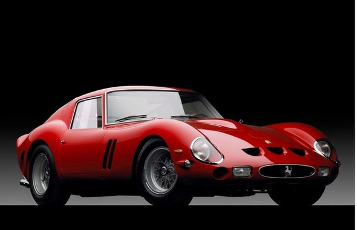

guilheme silva de siqueira turma 1A
ferrari é uma fabricante italiana de carros esportivos de luxo com sede em Maranello. Fundada por Enzo ferrari em 1939 na divisão de corridas da Alfa Romeo
com o nome Auto Avio Costruzioni, a empresa construiu seu primeiro carro em 1940. No entanto, o início da empresa como fabricante de automóveis é geralmente reconhecido em 1947,
quando o primeiro carro com o nome Ferrari foi concluído.
Em 2014, a Ferrari foi classificada como a marca mais poderosa do mundo pela consultoria Brand Finance. Em junho de 2018, o 250 GTO de 1964 tornou-se o carro mais caro da história
(em 2022 foi ultrapassado pela Mercedes-Benz 300 SLR Uhlenhaut Coupé, sendo vendida por 143 milhões de dólares), estabelecendo um recorde de venda de 70 milhões de dólares.

O Grupo Fiat adquiriu 50% da Ferrari em 1969 e expandiu sua participação para 90% em 1988. Em outubro de 2014, a Fiat Chrysler Automobiles (FCA)
anunciou suas intenções de separar a Ferrari S.p.A. da FCA; no momento do anúncio, a FCA detinha 90% da Ferrari.
A separação começou em outubro de 2015 com uma reestruturação que estabeleceu a Ferrari NV (uma empresa constituída nos Países Baixos)
como a nova holding do Grupo Ferrari e a subsequente venda pela FCA de 10% das ações em uma oferta pública inicial e listagem simultânea de ações ordinárias na Bolsa de Nova York.
Através das etapas restantes da separação, o interesse da FCA nos negócios da Ferrari foi distribuído aos acionistas da FCA, com 10%
continuando a ser propriedade de Piero Ferrari. O spin-off foi concluído em 3 de janeiro de 2016.
entrada nas corridas
h1>
Ao longo da sua história, a empresa tem se destacado por sua participação contínua em corridas, especialmente na Fórmula 1 (F1),
onde é a equipe de corrida mais antiga e mais bem sucedida, detendo o maior número de vitórias que foram 15.
Os carros de estrada da Ferrari são geralmente vistos como um símbolo de velocidade, luxo e riqueza.
Regras Para Ter Uma Ferrari
- Fidelidade: os clientes que comprarão os modelos mais caros e desejados da Ferrari que são pré escolhidos.
- precisam ser “merecedores” para ter o veículo milionário na garagem de casa.
- Comprometimento em não revender o veículo: os compradores não podem revender os seus veículos, o que inclui colocá-los à venda na internet
ou em anúncios.
- Quem “enjoar” ou ficar insatisfeito com o carro, deve devolvê-lo à concessionária onde foi adquirido pela primeira vez.
- Não alterar o automóvel: os donos são proibidos de realizar alterações nos carros. Caso descumpra, esta pessoa será banida de comprar automóveis da Ferrari.